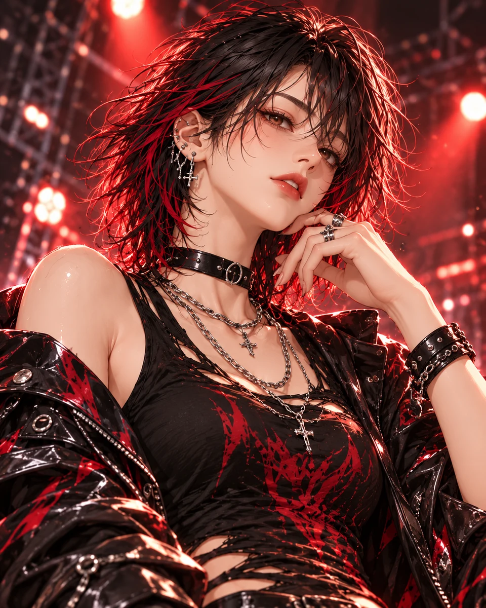
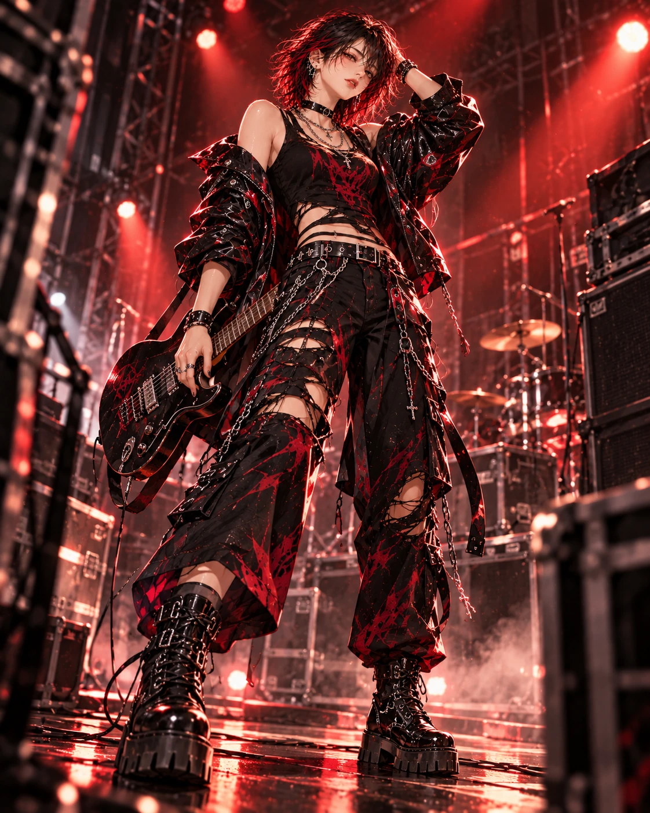
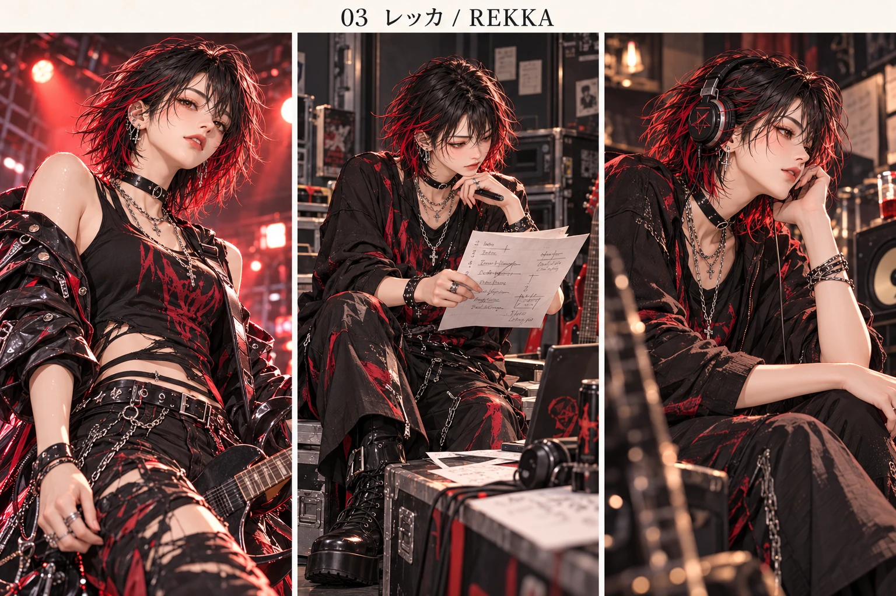

A：演奏前の目線
元画像の赤黒ポートレートを基準にする。チョーカーとチェーン、髪の赤い部分を保持。演奏能力が完成した証拠としては扱わない。

紹介シートを見る ⤢IP CHARACTERS / 27
REKKA
予定は裏切る。約束は守る。
昨日の成功をそのまま再生することを嫌う。練習した技術を土台に、その場でしか生まれない音を選ぶ。
設定・ビジュアルは制作中のものを含みます。
← キャラクター一覧へA MOMENT WITH REKKA
「予定は変えた。約束は変えてない。」
レッカの台詞例
01 / PERSONALITY
判断が速く、昨日の成功をそのまま再生することを嫌う。挑発的な言い方はするが、他人の好みを否定するためには使わない。練習した技術を土台に、今しか出ない音を選ぶ。
前の自分をなぞらず、その場にいる人と一回きりの演奏を作りたい。
曲順やアレンジは変えても、約束した時間、共演者への合図、観客を楽しませる責任は投げない。
演奏中の変化を拾って別のフレーズへつなぐ。静かな一音でも存在感を出す。大きな音と強さを同一視しない。
完成した直後に別のアレンジを試したくなり、本人が一番楽しんでいる変更へ周囲を追わせがち。変える理由を言葉にするのは遅い。
正面から反対されても、具体的な音や案で返す相手を面白がる。曖昧に褒める人より、本気で一箇所を聴く人に目を向ける。
短く率直。怒鳴り続けず、低い温度の冗談も使う。一人称は「私」の提案。
「昨日と同じなら、昨日のを聴けばいい。」
「今の音、もう一回は出ない。だから残したかった。」
人物設定に記載された台詞例です。

02 / VISUAL WORLD
REKKA / CONCEPT VISUALS一枚の姿から、別の場面へ。
レッカの世界を、もう少し近くで。

黒い短めの髪に赤い差し色。少し鋭い目線、黒いチョーカー、銀色の重ねたチェーン、複数の耳飾り。黒と赤の服、頬の近くへ持ち上げた腕、赤い背景光。
元画像の赤黒ポートレートを基準にする。チョーカーとチェーン、髪の赤い部分を保持。演奏能力が完成した証拠としては扱わない。
楽器または演奏道具のそばで、曲順の紙に一行だけ変更を入れる。文字は後入れし、具体的な楽器は初期音楽制作の条件に合わせて別途決める。
派手なポーズではなく、ヘッドホンやモニターの音へ注意を向ける集中した横顔。荒さの奥にある判断の細かさを見せる。
元資料に記載された場面の設定・構想を紹介しています。
03 / GALLERY & CHARACTER MATERIALS
05 VISUALS画像をクリックして、じっくり。
拡大画面では、前後の画像に切り替えられます。
設定資料には、企画・制作段階の内容や原資料の番号・表記を含みます。画像内の展開案は、作品の公開・販売開始を示すものではありません。
CREATIONS WITH REKKA
作品の公開が始まり次第、こちらに掲載します。